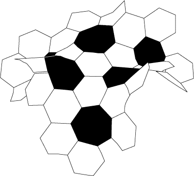

Homework
Ninth Homework (Due Friday 27 April
2012):
| Ch. 5 Review Exercises |
Numbers 1–18. |
| Ch. 6 Review Exercises |
Numbers 1–10. |
Eigth Homework (Due Wednesday 18 April
2012):
| Ch. 4 Review Exercises |
Numbers 1–7, 9, 10, 12–14, 16–20. |
| Chapter 4 Exercises |
Numbers 3, 14. |
| |
Given segments AB and CD, prove that there exists a Saccheri quadrilateral
with base congruent to AB and sides congruent to CD. |
Seventh Homework (Due Wednesday 11 April 2012):
Demonstrate, with proof, the following constructions of
Euclid (Page 30) I.9, I.10, I.22, I.23, IV.10.
The proofs can be sketches, but they
must be valid. |
Sixth Homework (Due Monday 2 April 2012):
| Chapter 3 Exercises |
Numbers 22, 23, 26, 27, 32, 33. |
Fifth Homework (Due Monday 26 March 2012):
| Ch. 3 Review Exercises |
Number 10–15. |
| Chapter 3 Exercises |
Numbers 10, 13, 19 (take F to be R), 20, 21. |
Fourth Homework (Due Monday 20 February 2012):
| Ch. 2 Major exercises |
Number 8. |
| Ch. 3 Review Exercises |
Number 1–8. |
| Chapter 3 Exercises |
Numbers 1,2,4. |
Third Homework (Due Monday 13 February 2012):
| Chapter 2 exercises, beginning page 91: |
Numbers 7, 9, 11, 13, 17, 19 (a). Think about 19 (b), and we'll discuss it in class.
Do number 5 of the Major Exercises. |
Second Homework (Due Monday 6 February 2012):
| Review exercises, page 41: |
Do numbers 11–18. For each, determine if it is correct or incorrect, and give
a one-to-two sentence justification. These are meant to help you reflect
on the material of the chapter. |
| Exercises, page 46— |
Do number 14 on constructions. |
| Exercises, pages 91— |
Numbers 1-6. |
First Homework (Due Friday 27 January 2012):
| Review exercises, page 41: |
Do numbers 1–10. For each, determine if it is correct or incorrect, and give
a one-to-two sentence justification. These are meant to help you reflect
on the material of the chapter. |
| Exercises, pages 42— |
Read the note on page 42, and do numbers 2 and 4.
Also do numbers 5, 11, and 12. Number 12 is challenging and hence will be graded as
extra credit. |
|

|